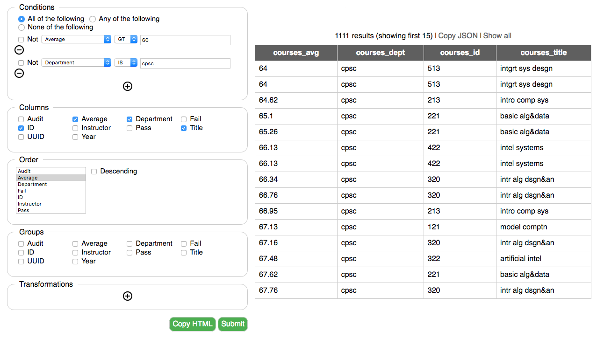
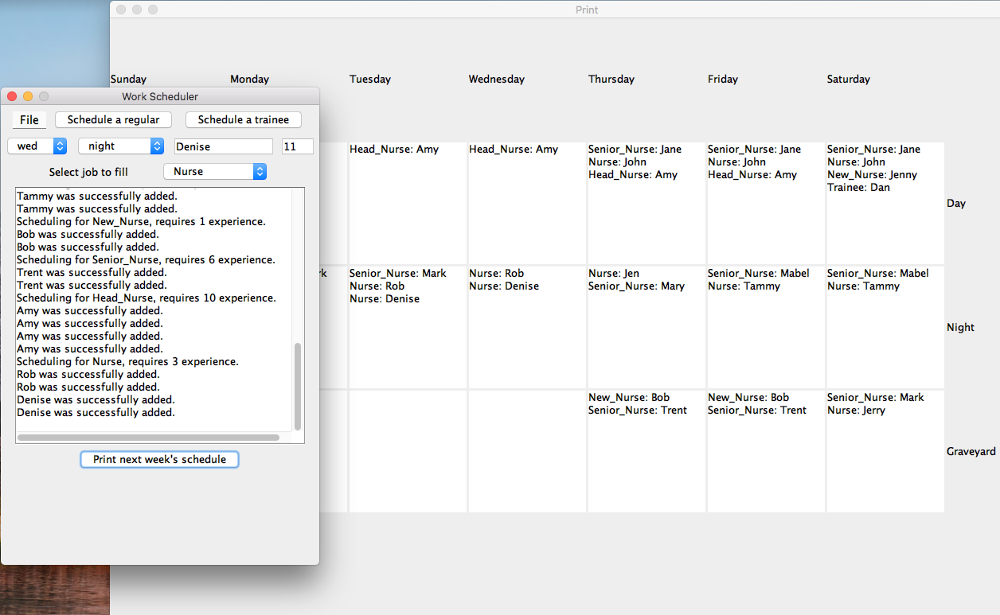

The portfolio of
Brian KimAbout me
I'm a third year Computer Science student at UBC persuing a second degree. Prior to starting my degree, I worked at the Port of Vancouver for two years. The languages I'm most familiar with are JavaScript, Java, and C++. I've also dabbled in HTML and CSS while creating this website.
In my current job search, my aim is to gain insight into how good software is created in industry. For example
how design patterns are applied in practice, the use of principled coding practices, and the software development lifecycle.
I hope to contribute positively to a project by using my recent programming experience while leveraging the problem solving skills
exercised during my previous degree in Physics together with unique teamwork skills gained from my prior work experience.
In my spare time I enjoy working on my aquariums, snowboarding, and occasionally auto repair and maintainence.
Projects
-

InsightUBC
A web application written in TypeScript created as a software engineering course project. Takes a query such as "Which courses in Computer Science have an average greater than 80%." as JSON, converts it to logic, and then filters UBC's pair database containing thousands of courses.
The result is a list of the requested courses which is returned as a JSON object.
The user interacts with a UI that accesses REST endpoints which communicate with a backend API. -

WorkScheduler
A Java course project which is a simple weekly scheduler with save and load functionalities.
Has a GUI made with Swing which can output a calendar showing the schedule.
Applied OOP principles such as type polymorphism and inheritance.
The project can be accessed through my GitHub link at the top of the page. -

BFS/DFS Image Fills
An image fill which can use both a Breadth-First Search or a Depth-First Search depending on if a queue or stack is used respectively, the search is done on pixels neighbouring an initial central pixel.
Queue and stack implementations were written to be as efficient as possible (Constant time push, pop, peek, etc.).
A functor was used to determine the colour of a neighbouring pixel.